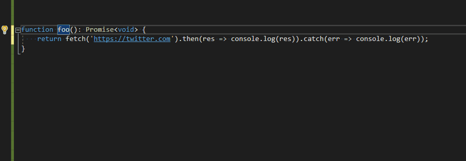

Automatically Refactoring Typescript Promise Code
This feature allows the Typescript language service to automatically refactor code that uses Promise methods such as .then() or .catch() to instead use the async and await keywords.
Async/await offers many advantages over promise methods including cleaner syntax, error handling, debugging, and readability. The benefits of the synchronous style code provided by async/await are largely recognized by the Javascript community. However, there is still a substantial amount of asynchronous code written using Promises. This feature provides a quick and simple transition to using the async/await keywords.
Demo: 
TL;DR: A pattern based approach to automatically refactor Promise code in Typescript
Related Links: Typescript Blog Post, Proposal, Code